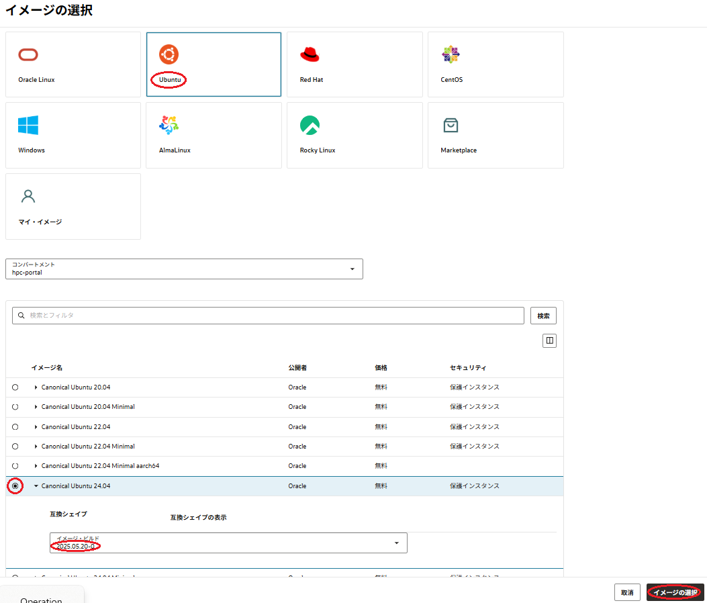
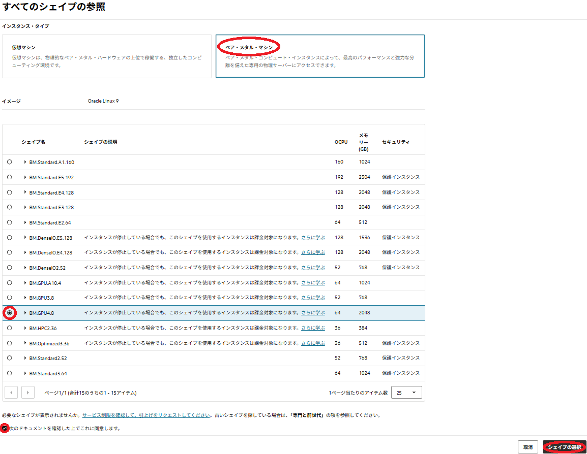
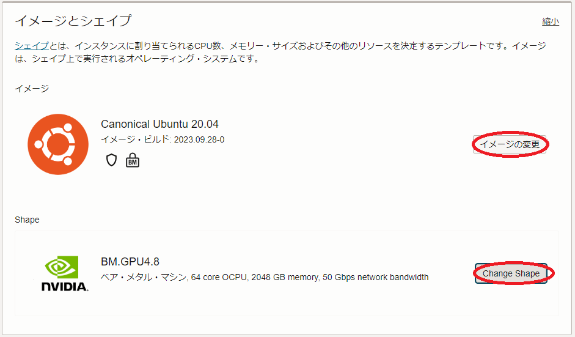
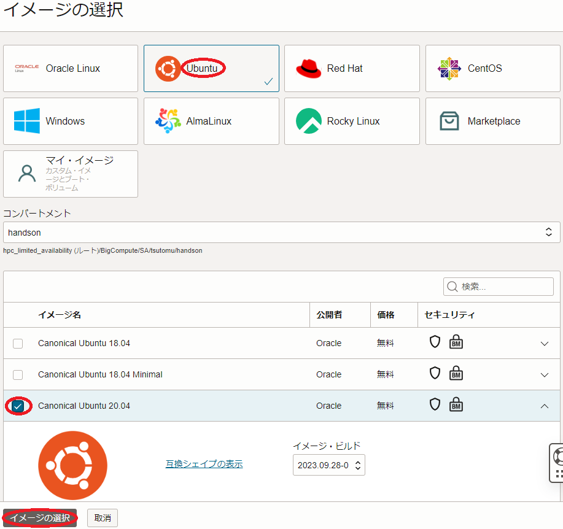
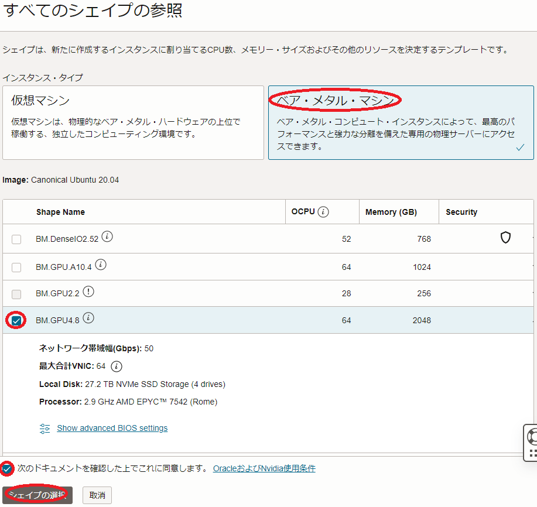
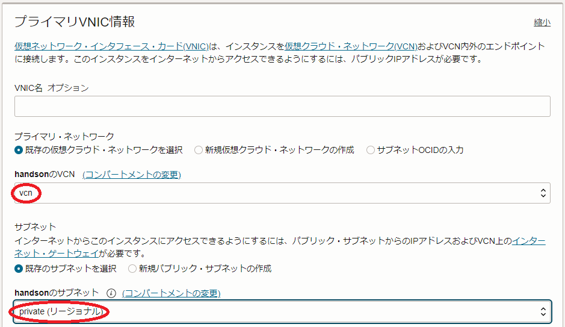
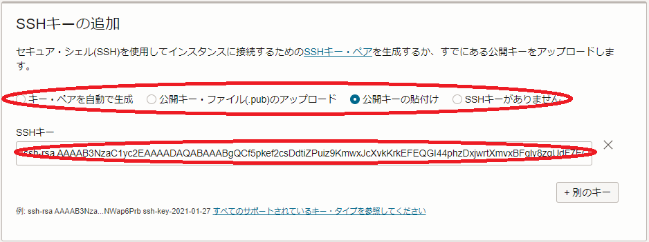
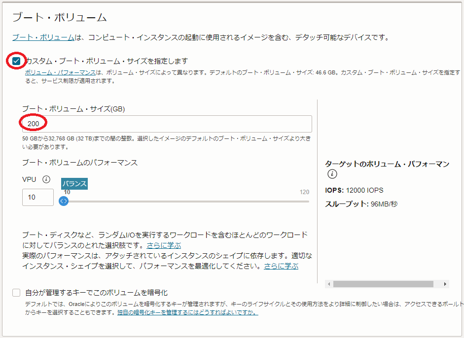

機械学習ワークロード実行のためのGPU搭載ノードは、NVIDIAが提供する様々なGPU関連ソフトウェアの開発が主にUbuntuで行われていることから、そのOSにUbuntuを使用するのが主流になっていますが、UbuntuをOSに指定してGPU搭載インスタンスをデプロイする場合、GPUを利用するためのソフトウェアを自身でインストール・セットアップする必要があります。
本テクニカルTipsは、UbuntuをGPU搭載インスタンスと共にデプロイした後GPU利用に必要なソフトウェアをインストール・セットアップすることで、機械学習ワークロード向けGPUノードを構築する方法を解説します。
注意 : テクニカルTips内の画面ショットは、現在のOCIコンソール画面と異なっている場合があります。
0. 概要
インスタンスOSに利用可能なLinuxディストリビューションは、 Oracle Linux をはじめ主要なものが用意されていますが、機械学習ワークロード実行のためのGPUノードのOSで主流になっているUbuntuもこれに含まれます。
ただこの場合、GPUを利用するための以下ソフトウェアは、GPUインスタンスデプロイ後に自身でインストール・セットアップする必要があります。
- NVIDIA Driver : NVIDIA製GPUドライバソフトウェア
- NVIDIA CUDA : CUDAライブラリ
- NVIDIA Fabric Manager : NVSwitch （ BM.GPU4.8 / BM.GPU.A100-v2.8 に搭載）管理ソフトウェア（※1）
※1）NVSwitch を搭載するシェイプの場合のみインストールします。
本テクニカルTipsは、これらのソフトウェアをインストールし CUDA Samples でその動作確認を行う手順を、GPUシェイプ BM.GPU4.8 とUbuntu 20.04を例に解説します。
1. GPUインスタンスデプロイ
本章は、Ubuntu 20.04をOSとする BM.GPU4.8 をデプロイします。
-
OCIコンソールにログインし、GPUインスタンスをデプロイする リージョン を選択後、 コンピュート → インスタンス とメニューを辿ります。
-
表示される以下画面で、インスタンスの作成 ボタンをクリックします。
-
表示される コンピュート・インスタンスの作成 画面で、以下の情報を入力し 作成 ボタンをクリックします。なお、ここに記載のないフィールドは、デフォルトのままとします。
3.1
- 名前 ：インスタンスに付与する名前
- コンパートメントに作成 ：インスタンスを作成する コンパートメント

3.2 配置 フィールド
- 可用性ドメイン ：インスタンスをデプロイする 可用性ドメイン

3.3 イメージとシェイプ フィールド

- イメージ ：Canonical Ubuntu 20.04 (イメージの変更 ボタンをクリックして表示される以下 イメージの選択 サイドバーで Ubuntu を選択し イメージ名 列で Canonical Ubuntu 20.04 を選択し、 イメージの選択 ボタンをクリック。）

- Shape ： BM.GPU4.8 (Change Shape ボタンをクリックして表示される以下 すべてのシェイプの参照 サイドバーで ベア・メタル・マシン をクリックして表示される BM.GPU4.8 を選択し 次のドキュメントを確認した上でこれに同意します。 チェックボックスをチェックし シェイプの選択 ボタンをクリック。）

3.4 プライマリVNIC情報 フィールド
- プライマリ・ネットワーク ： GPUインスタンスを接続する 仮想クラウドネットワーク
- サブネット ：GPUインスタンスを接続する サブネット

3.5 SSHキーの追加 フィールド
- SSHキー ：GPUインスタンスにログインする際使用するSSH秘密鍵に対応する公開鍵
- 公開鍵ファイルのアップロード（ 公開キー・ファイル(.pub)のアップロード ）と公開鍵のフィールドへの貼り付け（ 公開キーの貼付け ）が選択可能

3.6 ブート・ボリューム フィールド
- ブート・ボリューム・サイズ(GB) ：GPUインスタンスの ブート・ボリューム サイズ
- カスタム・ブート・ボリューム・サイズを指定します チェックボックスをチェックすると指定可能

※ 通常GPUノードは、様々な機械学習用ソフトウェアやコンテナイメージを格納する必要があるため、少なくとも200 GBの ブート・ボリューム サイズとします。
-
以下コマンドでGPUインスタンスにSSHログインします。この時、インストール時にデフォルトで作成されるユーザが ubuntu であることに留意します。
なお、 Canonical Ubuntu 20.04 イメージの BM.GPU4.8 インスタンスの場合、作成開始からSSHでログインできるまでに30分程度かかります。$ ssh ubunsu@a100-ub204
2. GPU関連ソフトウェアインストール
2-0. 概要
本章は、デプロイしたGPUインスタンスに NVIDIA Driver 、 NVIDIA CUDA 、及び NVIDIA Fabric Manager をインストールします。
なお、本テクニカルTipsでのこれらソフトウェアのインストールは、Ubuntuパッケージマネージャを使用します。
2-1. NVIDIA Driverインストール
本章は、GPUインスタンスに NVIDIA Driver をインストールします。
-
以下コマンドをGPUインスタンスのubuntuユーザで実行し、 NVIDIA Driver をインストールします。
$ distribution=$(. /etc/os-release;echo $ID$VERSION_ID | sed -e 's/\.//g') $ wget https://developer.download.nvidia.com/compute/cuda/repos/$distribution/x86_64/cuda-keyring_1.0-1_all.deb $ sudo dpkg -i cuda-keyring_1.0-1_all.deb $ sudo apt update $ sudo apt -y install cuda-drivers --no-install-recommends -
以下コマンドをGPUインスタンスのubuntuユーザで実行し、OSを再起動します。
この再起動は、起動後SSHログインできるまでに20分程度かかります。$ sudo shutdown -r now
2-2. NVIDIA CUDA・NVIDIA Fabric Managerインストール
本章は、GPUインスタンスに NVIDIA CUDA と NVIDIA Fabric Manager をインストールします。
-
以下コマンドをGPUインスタンスのubuntuユーザで実行し、 NVIDIA CUDA をインストールします。
$ sudo apt-key del 7fa2af80 $ distribution=$(. /etc/os-release;echo $ID$VERSION_ID | sed -e 's/\.//g') $ wget https://developer.download.nvidia.com/compute/cuda/repos/$distribution/x86_64/cuda-keyring_1.1-1_all.deb $ sudo dpkg -i cuda-keyring_1.1-1_all.deb $ sudo apt update $ sudo apt install -y cuda-11-8 -
以下コマンドをGPUインスタンスのubuntuユーザで実行し、 NVIDIA Fabric Manager をインストール・セットアップします。
この手順は、 NVSwitch を搭載するシェイプの場合のみ実施します。$ sudo apt install -y nvidia-gds-11-8 $ sudo apt install -y cuda-drivers-fabricmanager $ sudo systemctl enable --now nvidia-fabricmanager -
以下コマンドをGPUインスタンスのubuntuユーザで実行し、OSを再起動します。
この再起動は、起動後SSHログインできるまでに20分程度かかります。$ sudo shutdown -r now
3. CUDA SamplesによるGPU動作確認
本章は、 CUDA Samples で先のGPU関連ソフトウェアのインストールが正しく行われたかを確認します。
-
以下Webサイトにサクセスし、CUDA 11.8用のCUDA SamplesのソースコードをGPUインスタンスのubuntuユーザのホームディレクトリにダウンロードします。
https://github.com/NVIDIA/cuda-samples/archive/refs/tags/v11.8.zip
-
以下コマンドをGPUインスタンスのubuntuユーザで実行し、 CUDA Samples をビルドします。
$ sudo apt install -y cmake $ echo "export PATH=/usr/local/cuda-11.8/bin\${PATH:+:\${PATH}}" | tee -a ~/.bash_profile $ source ~/.bash_profile $ tar -xvf ~/cuda-samples-11.8.tar.gz $ cd cuda-samples-11.8; make -
以下コマンドをGPUインスタンスのubuntuユーザで実行し、 CUDA Samples が正しく動作するかを確認します。
この時、各サンプルプログラムの最後に出力される”Result”行が”PASS”となっていることで、正常動作を確認します。$ ./bin/x86_64/linux/release/deviceQuery : : deviceQuery, CUDA Driver = CUDART, CUDA Driver Version = 12.2, CUDA Runtime Version = 12.2, NumDevs = 8 Result = PASS $ ./bin/x86_64/linux/release/bandwidthTest : : Result = PASS NOTE: The CUDA Samples are not meant for performance measurements. Results may vary when GPU Boost is enabled. $